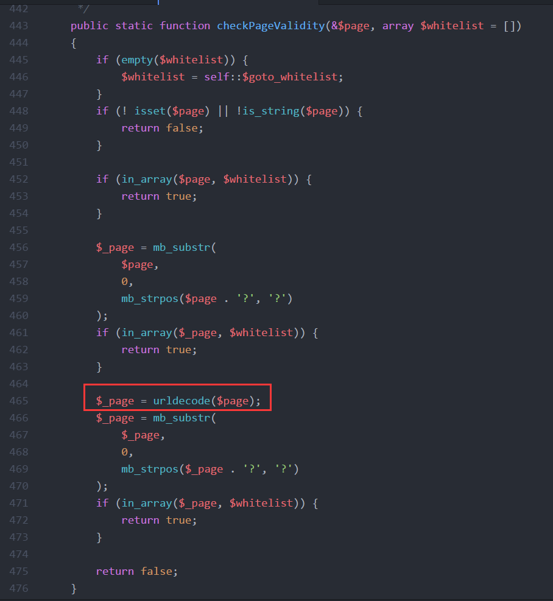

前言
phpMyAdmin 是一个以PHP为基础，以Web-Base方式架构在网站主机上的MySQL的数据库管理工具，让管理者可用Web接口管理MySQL数据库。借由此Web接口可以成为一个简易方式输入繁杂SQL语法的较佳途径，尤其要处理大量资料的汇入及汇出更为方便。其中一个更大的优势在于由于phpMyAdmin跟其他PHP程式一样在网页服务器上执行，但是您可以在任何地方使用这些程式产生的HTML页面，也就是于远端管理MySQL数据库，方便的建立、修改、删除数据库及资料表。也可借由phpMyAdmin建立常用的php语法，方便编写网页时所需要的sql语法正确性。
漏洞分析

- 可见第 61 行出现
include $_REQUEST['target'];，这是文件包含的前兆，只需要满足 55 - 59 行的条件即可 - 第57行限制
target参数不能以index开头 - 第58行限制
target参数不能出现在$target_blacklist内
找到 $target_blacklist 的定义
|
|
只要 target 参数不是 import.php 或 export.php 就行
- 第59行
Core::checkPageValidity($_REQUEST['target'])
找到Core类的checkPageValidity方法
文件路径 phpMyAdmin4.8.1\libraries\classes

可见 465 行，有一个 urldecode() 函数
把 ? 两次url编码为 %253f 即可绕过验证
环境搭建
- phpstudy
- php 5.5.38+Apache
- phpMyAdmin 4.8.1
本地文件包含（LFI）
payload
|
|

这里的 db_sql.php 我们只需要满足在 $goto_whitelist 就行了
|
|
LFI to RCE
利用mysql的data文件
- 修改或新建一个字段，名字修改为
WebShell的内容

- 保存

- 找到对应的数据库文件查看

- 包含它
payload
|
|

参考文章
查MD5官方文章
【CVE-2018-12613】phpMyAdmin 4.8.1 LFI to RCE